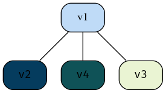

Social Web Analytics
Table of Contents
- Index
- (Wk 1) Introduction to the Social Web
- (Wk 2) Introduction to R
- DONE (wk 3) Simple Exposure Analysis
- DONE (wk 4) Text Mining 1 (TF-IDF Weighting) tfidf
- TODO (wk 5) Visualisation
- TODO (wk 7) Graphs 1 (Definition) CURRENT
- TODO (wk 8) Graphs 2 (PageRank)
- TODO (wk 9) Time 1 (Trends)
- TODO (wk 10) Time 2 (BACI designs)
- TODO (wk 11) Spatial Analysis
- TODO (wk 12) Text Mining 3
- TODO Assessment Due
- TODO Final Exam
- References
- Data Camp
Index
Files ATTACH
The files are located thusly:
- Twitter Tokens
- Learning Guide
- Lecture Notes etc. are located in the Dropbox folder:
- Scripts and literate programming files are located in the
DataScigit: - Notes are located mostly in this
org-modefile but there may also be someMDstuff.
Online References
- Data Science Made Simple
- There’s a link to Penn State Statistical resources.
- look on vUWS / Reading and Resources / Statistics.
general form of
(Wk 1) Introduction to the Social Web
Housekeeping
In this unit Twitter will be the data source, so it really would be worth looking at finishing that DataCamp course.
Twitter is better because it is public.
This is mostly used for Marketing purposes.
There is a Tuesday Workshop in R that may be worth attending regardless of your level of competence.
Project
This is split up to try and stop students getting overloaded.
Anxious focusing on too many things at once
reduce the load on memory
seperate things
like leraning stts and r at the same time is too much to do all at once
master one thing at a time and then bring them all back together second, it’s really easy to get overloaded.
Maybe read these:
- [https://carpentries.github.io/instructor-training/05-memory/index.html][Memory and Cognitive Load – Instructor Training]]
Social networks
The Social Web
Analysis of the Social Web
Data Analysis with R
Tutorial
(Wk 2) Introduction to R
Unit Resources
Using Sapply
library(tidyverse) 1:10/10 seq(0.1, 1, by = 0.1) seq(0.1, 1, length.out = 10) sapply(1:10, function(i){return (i*0.1)}) %>% as.vector()
Tutorial
DONE (wk 3) Simple Exposure Analysis
It hasn’t been released yet, keep checking Why do we like it? because businesses can use it to see who likes what etc.
Lecture
Chi Distribution
- Logic of the Chi Distribution
The expected value of any cell \(x_ij\) is:
\[\begin{aligned} e_{ij}= \frac{\sum \left[ \text{row} \right] \times \sum \left[ \text{col} \right] }{\sum \left[ \text{all} \right] } \end{aligned}\]
Or More Formally:
\[\begin{aligned} e_{ij} = \frac{\sum^{\text{max} \left( s \right)}_{s=1} \left[ x_{sj} \right] \times \sum^{\text{max} \left( t \right)}_{t= 1} \left[ x_{it} \right] }{\sum^{\text{max} \left( i \right)}_{i= 1} \left[ \sum^{\text{max} \left( j \right)}_{j= 1} \left[ x_{ij} \right] \right] } \end{aligned}\]
The logic is best explained by way of example, say we had a hat of numbers between 1 and 3, on red and blue paper. A natural question is whether or not there is evidence to suggest that the colour of the paper and the number is independent, say the results are as shown in table 1:
Red Blue SUM 1 22 19 41 2 9 8 17 3 33 89 122 SUM 64 116 180 We would need to do :
- Compute the Expected Values
- Determine the average (squared) distance from expectation
- Determine the probability of having a value less extreme that the distance value observed
Consider the expected value of a red number 2.
- (9+8)=17 values of 2 occured and the frequency of red values was \(\frac{22+9+33}{180}\)
- (22+9+33)=64 Red numbers occured and the frequency of the number 2 was \(\frac{9+8}{180}\)
Notice how these commute?
- Outer Product and the Chi Distribution Chi_Square
We did this in Wk2 of Thinking About Data:
# Create Vectors g_moringa <- c("BoRdeR" = 264,"GraSs" = 127,"SaNd" = 99) g_vicinus <- c("BoRder" = 161,"GraSs" = 116,"SaNd" = 67) # Capitals to emphasise change later with dimnames # Create a Matrix eel_Mat <- rbind(g_moringa, g_vicinus) dimnames(eel_Mat) <- list(species = c("G.moringa", "G.vicinus"), location = c("Border", "Grass", "Sand") ) eel_Mat
location species Border Grass Sand G.moringa 264 127 99 G.vicinus 161 116 67n <- sum(eel_Mat) # Determine how many species there are (species_counts <- rowSums(eel_Mat)) (species_proportions <- rowSums(eel_Mat)/n) # Determine the area proportions (location_proportions <- colSums(eel_Mat)/sum(eel_Mat)) # Calculate the expected distribution of that number for those proportions expected_counts <- outer(species_counts, location_proportions) expected_counts <- species_counts %o% location_proportions species_counts %o% location_proportions print(list(species_counts, location_proportions, expected_counts, base::outer(location_proportions, species_counts) ))
Interestingly you can write:
outer(x, y) x %o% ySo way simpler:
# Count all cells n <- sum(eel_Mat) (feature_counts <- rowSums(eel_Mat)) (obs_counts <- colSums(eel_Mat)) # Calculate the Expected Distribution for each cell cat("\n") print("Using the outer Product and dividing by all counts") cat("\n") (expected_counts <- feature_counts %o% (obs_counts * 1/n))
Tutorial
The Tutorial is esentially doing the problem exercises located here
:DIR: Attachments/SocialWebAnalytics/
These are the Solutions
Exercise 2.3.3
Write a for loop to convert a number to a sequence of plus signs. For example, 5
will be converted to +++++
main <- function(n) { printPlus(n) } printPlus <- function(n) { for(i in seq_len(n)){ cat("+") } } main(sample(1:10, 1))
Exercise 2.4.1
Write a function check.pass that takes the data structure past.results and
returns a vector showing if each grade was a pass or a fail.
library(tidyverse) ## Create Data Frame of Results past.results <- sample(1:7, 24, replace = TRUE) names(past.results) <- sample(letters, length(past.results), replace = TRUE) past.results.df <- data.frame("Unit Name" = names(past.results), "Results" = past.results) ## Extract Vector past.results <- past.results.df$Results ## Create a loop to check Pass Results check.pass.loop <- function(vec) { for(i in seq_len(length(past.results))) { if(vec[i]<=3){ paste("The class called", names(vec)[i], "was failed") %>% print() } } } check.pass.loop(past.results) ## Create a vector of pass/fail # As a Test check_pass <- function(vec){ return(vec<3) } check_pass(past.results)
Exercise 3
library(jsonlite)
DONE (wk 4) Text Mining 1 (TF-IDF Weighting) tfidf
Material:
Lecture
There are two packages, twitteR which is old and unmaintained, rtweet is
newer, easier and actively maintained.
Tutorial
TODO (wk 5) Visualisation
- Lecture
- Markdown Notes
- Script
-
DEADLINE: SCHEDULED:
[ ]Finish the Tutorial using K-means and Hierarchical[ ]Read the ISL Chapter on Clustering[ ]Explain Lecture slides on PCA
Dot Product and Cosine Distance
Cosine distances is the dot product of a u
Read PCA
I need to review ISL PCA, some good sources as well are:
TODO Tutorial
PCA ATTACH
My PCA just isn’t right, given that the data is standardised the outliers don’t belong, I believe it could be caused by empty tweets maybe (but I don’t think so),
Don’t scale or centre PCA when doing Text mining because otherwise the plot will come out wrong, look at this:
Figure 1: PCA Plot with Distinctive Outliers
TODO (wk 7) Graphs 1 (Definition) CURRENT
TODO Set up a social Web Export to Documents gitpage
TODO Questions to Ask
My Data Doesn’t appear to have Clusters, Is this OK?
Resources LINKS
TODO Lecture
TODO Tutorial (Last Week Move)
- Twitter Working
Load any packages, particularly
rtweetandigraphif (require("pacman")) { library(pacman) } else{ install.packages("pacman") library(pacman) } pacman::p_load(xts, sp, gstat, ggplot2, rmarkdown, reshape2, ggmap, parallel, dplyr, plotly, tidyverse, reticulate, UsingR, Rmpfr, swirl, corrplot, gridExtra, mise, latex2exp, tree, rpart, lattice, coin, primes, epitools, maps, clipr, ggmap, twitteR, ROAuth, tm, rtweet, base64enc, httpuv, SnowballC, RColorBrewer, wordcloud, ggwordcloud, igraph) mise()
First set up all the twitter tokens:
## ** Set up Tokens =========================================================== options(RCurlOptions = list( verbose = FALSE, capath = system.file("CurlSSL", "cacert.pem", package = "RCurl"), ssl.verifypeer = FALSE )) setup_twitter_oauth( consumer_key = "dE7HNKhwHxMqqWdBl1qo9OAkN", consumer_secret = "7ByyC6lR9d2aqLoXHHBkOtKRiU10cHhGguroiGKQ69AGDMMI9V", access_token = "1240821178014388225-sFWver0NDDY3BhPdPyg8d4mtQxnl0K", access_secret = "HLBWzHcemHzYJnw5ZLvKpEhQ5KaWwK6Nsj6cxBjUf51NJ" ) # rtweet ================================================================== tk <- rtweet::create_token( app = "SWA", consumer_key = "dE7HNKhwHxMqqWdBl1qo9OAkN", consumer_secret = "7ByyC6lR9d2aqLoXHHBkOtKRiU10cHhGguroiGKQ69AGDMMI9V", access_token = "1240821178014388225-sFWver0NDDY3BhPdPyg8d4mtQxnl0K", access_secret = "HLBWzHcemHzYJnw5ZLvKpEhQ5KaWwK6Nsj6cxBjUf51NJ", set_renv = FALSE )
First load the data:
setwd("~/Notes/DataSci/Social_Web_Analytics/") load("./chris2019.RData") (t <- rtweet::get_friends("chrishemsworth", token = tk)) %>% head()
Eigenvalue centrality
by virtue of you being connected to a highly connected node you’re connection is improved You can use the adjacency matrix to get the finalised values of the centrality measures based on the weights of other nodes in the network.
Random Walk on a Graph
State Distribution ATTACH
If there is no edge, the probability of arrival is zero, take for example this graph:
Images from the Slides
@startdot
strict digraph graphName {
concentrate=true
fillcolor=green
color=blue
style="filled, rounded"
v1 [shape=box, fillcolor="#a31621", style="rounded, filled"]
edge [
arrowhead="none"
];
node[
fontname="Fira Code",
shape="square",
fixedsize=false,
style=rounded
];
# A -> B [dir="both"]
v1 -> v2
v1 -> v2
v1 -> v4
v4 -> v1
v2 -> v1
v1 -> v2
v1 -> v3
v1 -> v4
v1 [shape=box, fillcolor="#bfdbf7", style="rounded, filled"]
v2 [shape=box, fillcolor="#053c5e", style="rounded, filled"]
v3 [shape=box, fillcolor="#1f7a8c", style="rounded, filled"]
v3 [shape=box, fillcolor="#eaf4d3", style="rounded, filled"]
v4 [shape=box, fillcolor="#0f5257", style="rounded, filled"]
}
@enddot

v1 -> v2 v1 -> v2 v1 -> v4 v1 -> v2 v1 -> v2 v1 -> v4 v2 -> v1 v2 -> v1 v2 -> v1 v3 -> v1 v3 -> v1 v3 -> v1 v4 -> v1 v4 -> v1

Figure 4: State Distribution from Lecture Slides
Degree Etc.
The degree is the number of edges connected to a node 1.
In a random walk the probability of following a particular edge is equal to 1/degree(v).
Probability Transition ATTACH
The probability Transition matrix is just a linear recurrence relation of the form \eqref{probtransma}:
\begin{equation} \vec{P_{n}} = \mathbf{T} \vec{p_{n-1}} \label{probtransma} \end{equation}See the Math Modelling Notes
| v1 | v2 | v3 | v4 | |
| v1 | 0 | 1/2 | 1/3 | 1/2 |
| v2 | 1/3 | 0 | 1/3 | 0 |
| v3 | 1/3 | 1/2 | 0 | 1/2 |
| v4 | 1/3 | 0 | 1/3 | 0 |
\[\begin{aligned} \vec{p_{2_1}} &= 0 \cdot 1 &+ 1/2 \cdot 0 &+ 1/3\cdot0 &+ 1/2 \cdot 0 \\ \vec{p_{2_2}} &= 1/3 \cdot 1 &+ 1/3 \cdot 0 &+ 1/3\cdot0 &+ 0 \cdot 0 \\ \vec{p_{2_3}} &= 1/3 \cdot 1 &+ 1/2 \cdot 0 &+ 0 \cdot0 &+ 1/2 \cdot 0 \\ \vec{p_{2_4}} &= 1/3 \cdot 1 &+ 0 \cdot 0 &+ 0 \cdot1/3 &+ 0 \cdot 0 \end{aligned}\]
Probability Transition for Directed Graphs ATTACH
See this screenshot:

The Degree is:
| Vertices | v1 | v2 | v3 | v4 |
| Degree | 2 | 1 | 1 | 1 |
The Adjacency Matrix is:
| v1 | v2 | v3 | v4 | |
| v1 | 0 | 0 | 0 | 1 |
| v2 | 1 | 0 | 0 | 0 |
| v3 | 1 | 1 | 0 | 0 |
| v4 | 0 | 0 | 1 | 0 |
The Transition Probability Matrix is simply:
adj_Mat %*% diag(1/degree_Vec)adj_Mat / diag(1/degree_Vec)
| v1 | v2 | v3 | v4 | |
| v1 | 0 | 0 | 0 | 1 |
| v2 | 1/2 | 0 | 0 | 0 |
| v3 | 1/2 | 1 | 0 | 0 |
| v4 | 0 | 0 | 1 | 0 |
Stationary Distribution
Solve
TODO (wk 8) Graphs 2 (PageRank)
Lecture
Tutorial
TODO (wk 9) Time 1 (Trends)
Lecture
Tutorial
TODO (wk 10) Time 2 (BACI designs)
Lecture
Tutorial
TODO (wk 11) Spatial Analysis
Lecture
Tutorial
TODO (wk 12) Text Mining 3
Lecture
Tutorial
TODO Assessment Due
TODO Submit Company Twitter Handle for Group Project ATTACH
TODO Create Github Repo for Group Project
TODO Final Exam
Final Exam will be handwritten problems, no R.
References
When exporting make sure to use BibTeX, this currently is not in the build
process for emacs so make sure to open the .tex file with vimtex and build
it from there if the references are not showing up properly.
Data Camp
TODO (wk 6) Text Mining 2 (Clustering) wk6
[ ]Finish the Tutorial using K-means and Hierarchical[ ]Read the ISL Chapter on Clustering[ ]Explain Lecture slides on PCA
TODO Lecture
TODO Tutorial
TODO (wk 6) Data Camp Text Mining DataCamp
It’s becoming pretty clear that I’m going to need to do some data camp on this stuff: